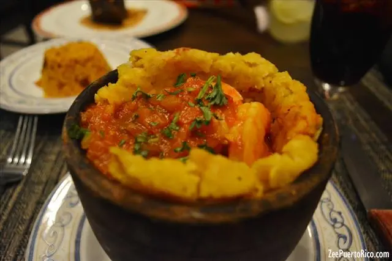
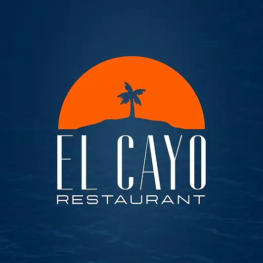

Gastronomía
Fajardo es un destino donde combinamos lo mejor de la cocina tradicional puertorriqueña con influencias internacionales. Los visitantes pueden disfrutar desde elegantes restaurantes frente al mar hasta kioscos informales que ofrecen alcapurrias, bacalaítos y otras frituras típicas. La cercanía con el océano y su ambiente turístico hacen de nuestro municipio un lugar ideal para saborear comidas auténticas mientras se contempla el paisaje costero.
¡Buen provecho!

Lista de Restaurantes

El Cayo Restaurant & Beach Club
Un lugar paradisíaco acompañado de la brisa caribeña, en donde vas a disfrutar de los mejores espacios y su espectáculo de botes, un ambiente familiar donde te sentirás comiendo sobre el mar, también puedes celebrar de un día inolvidable en su salón de actividades y piscina. El paraíso en Fajardo que no te puedes perder.
Ver másPasión por el Fogón
Pescadores del área se encargan de llevar los mariscos más frescos a tu mesa. Famosos por rellenar sus pescados de camarones, carrucho o langosta. Surtido menú para niños. El nombre hace referencia a la pasión que siente Chef Myrta Pérez Toledo por desarrollar platos de la cocina tradicional puertorriqueña y convirtiéndolos en una experiencia para el paladar.
Ver másHeladería Cremaldi
Esta es la casa del mantecado frito. ¿La especialidad? Una bola de mantecado de vainilla empanada con hojuelas de maíz que, posteriormente, se fríe. Es una receta mexicana que fue traída hace 18 años a la Isla -con mucho éxito- por el padre de Magali Sandoz, propietaria de la heladería Cremaldi. Decoración colorida, buen trato.
Ver más